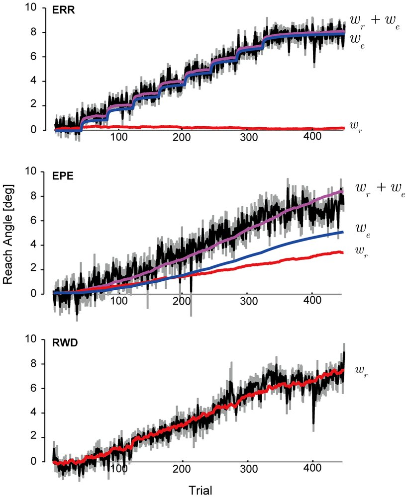
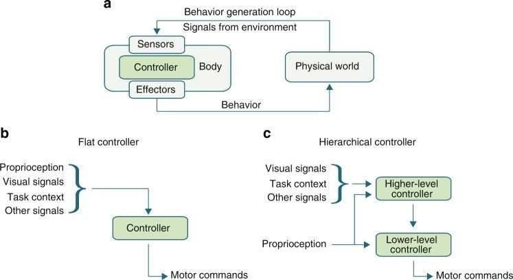

From Sensorimotor Neuroscience to Robot Learning
Motor neuroscience is most useful to robot learning not as architectures to copy but as measured answers to questions robot learning keeps asking. Which learning signal suits which problem? How should control be split across loops of different speed? What objective produces movement that is smooth, accurate and cheap? How far should a controller trust its model of the world? This page pairs each principle with what robot learning already uses, what it has not borrowed yet, and an experiment that would test the transfer. The detailed reviews are linked throughout.
Neuroscience reviews: impedance · internal models · optimal feedback control · touch and grip · synergies · population dynamics. Robot-learning reviews: variable impedance · adaptation · passivity · safe RL · stiffness geometry · games.
1. Three learning signals
Doya (1999) proposed a computational division of labour. The cerebellum does supervised learning from errors between predicted and actual sensory outcomes. The basal ganglia do reinforcement learning from errors in predicted reward. The cerebral cortex does unsupervised learning of representations. It is a map, not a partition, but it names the three signals a learning robot can use.
Reward prediction error. Schultz, Dayan and Montague (1997) showed that midbrain dopamine neurons behave like the temporal-difference error of reinforcement learning, \(\delta_t = r_t + \gamma V(s_{t+1}) - V(s_t)\). The neurons respond to an unexpected reward. After learning they respond to the cue that predicts it instead, and they dip when a predicted reward is omitted. Figure 1 runs TD(0) on that experiment. The textbook model predicts that the response travels backward from reward to cue across trials. Amo et al. (2022) reported such a gradual shift in mouse dopamine neurons.
Sensory and reward errors together. Izawa and Shadmehr (2011) separated the two in people. Subjects adapted to a rotated cursor while seeing the cursor's error, seeing only whether they hit, or both. A two-memory model, one memory driven by sensory prediction error and one by reward prediction error, fits all three conditions (Figure 2). With only reward feedback, people still adapted, through the reward-driven memory. The sensory memory, which also shifts where people feel their hand is, did not engage.

Robot learning has both signals: world models and system identification on one side, policy gradients and value learning on the other. It rarely measures which one carries a given adaptation. Haith and Krakauer (2013) frame human motor learning as a mix of model-based and model-free mechanisms. Izawa and Shadmehr's design works for robots too: perturb the dynamics, then ablate the model update or the policy update and see which one recovers performance.
2. Loops at different speeds
Merel, Botvinick and Wayne (2019) argue that hierarchical motor control in mammals and machines solves the same problem: a fast lower level closes loops on proprioception, and a slower higher level, with access to vision and task context, modulates it (Figure 3).

The human loops have measured latencies. The short-latency stretch reflex takes 20–45 ms, the long-latency (transcortical) response 50–100 ms, and voluntary and visually guided corrections 100 ms or more (Pruszynski and Scott 2012). The robot stack has a similar shape, with different numbers (Figure 4). The important finding is that the long-latency response is not a fixed reflex. Its gain depends on the task, in the way optimal feedback control predicts. The fast loop is fixed in structure, and the slow loop sets its gains.
Variable impedance control is the robot version of that design. A 1 kHz impedance loop handles contact, and a policy running 20 to 100 times slower sets its stiffness and damping. Bronars, Park and Agrawal (2026) found that a policy's own feedback can make the effective stiffness five times that of a policy on 32-times-stiffer gains (review). The two levels share the impedance, as reflexes and muscles do. The transfer still to test is whether a learned gain schedule becomes task-dependent the way long-latency reflexes do, for example stiffer when a perturbation would push toward an obstacle.
3. Noise shapes movement, and exploration
Harris and Wolpert (1998) asked what trajectory a nervous system should choose if its motor noise grows with the size of the command. Their answer was the one that minimises the variance of the endpoint. That single assumption predicts smooth, single-peaked speed profiles and the trade-off between speed and accuracy, with no smoothness term in the objective. Figure 5 solves the problem for a damped point mass driven through a 40 ms muscle filter. Because the mean trajectory is linear in the commands and the variance is quadratic, the optimum is a weighted least-norm solution.
Two lessons follow. First, physical actuators also have command-dependent noise, so an objective that ignores it will choose movements that are fast and imprecise on hardware. Second, the nervous system shapes its own variability. Wu et al. (2014) found that people whose motor variability was larger along the task-relevant dimension learned a reward-based task faster, and that variability was regulated during learning. RL exploration noise is usually isotropic and independent of the command. Lattice (Chiappa et al., NeurIPS 2023) correlates exploration across actuators through the policy's latent state, and DEP-RL (Schumacher et al., ICLR 2023) drives exploration with a self-organising controller (differential extrinsic plasticity). Both target musculoskeletal models with many actuators, MyoSuite among them, where independent noise on each muscle explores poorly.
4. Objectives: correct only what matters
Optimal feedback control (Todorov and Jordan 2002; Todorov 2004) explains why people let task-irrelevant variability float while tightly controlling what matters. Deviations are corrected only when they affect the goal (review). In robot learning the same idea separates good from bad reward design. Rewards that penalise every deviation from a reference trajectory produce rigid behaviour and fight the dynamics. Rewards on the task outcome plus an effort cost let the policy find its own redundancy. The safety counterpart is the least-restrictive filter, which changes the action only when the safe set demands it (safe RL review).
5. Prediction, adaptation and contact
- Forward models predict the consequences of commands to beat sensory delay (Wolpert, Ghahramani and Jordan 1995; Kawato 1999). In robots: learned dynamics in state estimators, world models, and the latent estimate of rapid motor adaptation (review).
- Two speeds and a memory of errors. Fast and slow processes, and learning rates that depend on how consistent the environment has been (Smith et al. 2006; Herzfeld et al. 2014). Robot adaptation modules rarely adapt their own rate.
- Events, not streams. Manipulation in people is organised around contact events, checked against predictions, with grip force kept a margin above slip (Johansson and Flanagan 2009; review). Robot policies mostly consume force as a continuous stream.
- Impedance against the unpredictable (review) and synergies as low-dimensional action spaces (review).
6. Interaction
Braun, Ortega and Wolpert (2009) turned classic games into motor tasks. Two people converged to Nash equilibria; one person controlling both handles converged to the cooperative solution. Ganesh et al. (2014) linked two people through a virtual elastic band and found that both improved, the better partner included. For bimanual robots and human–robot collaboration, the first result says the control architecture changes the equilibrium found, and the second that physical coupling carries information (games review).
7. The map
| Principle in people | Robot-learning counterpart | Transfer still to test |
|---|---|---|
| Reward prediction error drives habit and skill learning (dopamine as TD error) | Model-free RL, TD learning | Measure how much of a robot's online adaptation comes from reward versus from its model, as Izawa and Shadmehr did in people |
| Sensory prediction error trains internal models (cerebellum) | World models, dynamics learning, RMA | Use contact onset as the identification event, the way grip force adapts to friction in 0.1 s |
| Fast and slow adaptation; learning rate set by environment consistency | Adaptation module plus slow policy; forgetting factors | Learn the adaptation gain from how fast the parameters drift |
| Feedback loops at 20–250 ms whose gains the task sets | Impedance loop at 1 kHz under a 10–50 Hz policy | Let the policy set fast-loop gains per task and test whether they tune like long-latency reflexes |
| Signal-dependent noise makes smooth, accurate movement optimal | Action noise is usually isotropic and command-independent | Shape exploration noise along task-relevant directions; model actuator noise as command-dependent |
| Correct only task-relevant errors (minimum intervention) | Reward shaping, least-restrictive safety filters | Penalise only the task error, not deviations from a reference, and compare variability structure |
| Stiffness against unpredictable force, compliance against unknown position | Variable impedance learning | Give fixed-gain baselines a learned feedforward and report detection latency |
| Low-dimensional synergies explain most hand-posture variance | Latent and eigengrasp action spaces | Test whether a synergy space helps on contact-rich dexterous tasks, not only on grasp shaping |
| Two people in a motor game find Nash; one person with two hands cooperates | Centralised versus decentralised bimanual policies | Train bimanual policies both ways on tasks with conflicting incentives and compare outcomes |
8. Cautions
- Borrow computations, not anatomy. The useful level is the problem being solved and the algorithm that solves it. "The cerebellum is a world model" is a slogan; "people identify friction from the first 100 ms of contact" is a testable design rule.
- Most data are from reaching. The best-characterised experiments are planar arm movements with a robotic handle. Dexterous, multi-contact hand control is far less mapped, which is exactly where robots need help.
- The constraints differ. Brains predict because their feedback is slow; robots have fast feedback but poor models of contact. The same computation can be worth less, or more, on a robot.
- The dopamine story is not the whole story. Dopamine also relates to movement and salience, and the fit of TD models is still debated, though recent data support the gradual shift the model predicts.